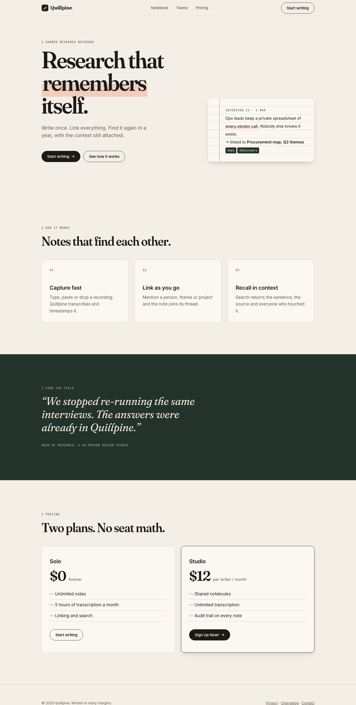
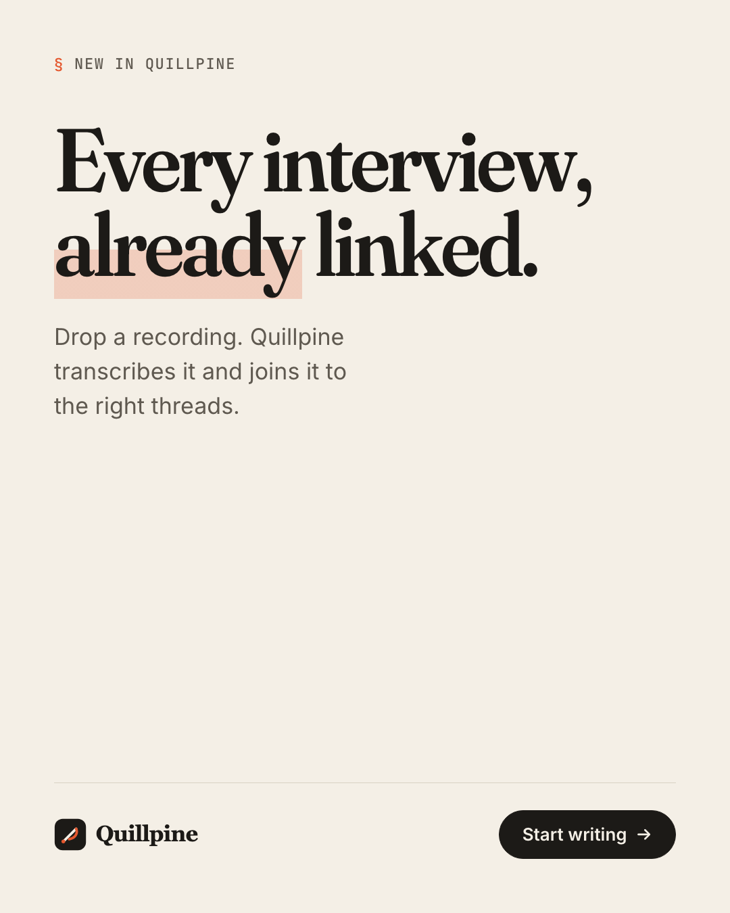
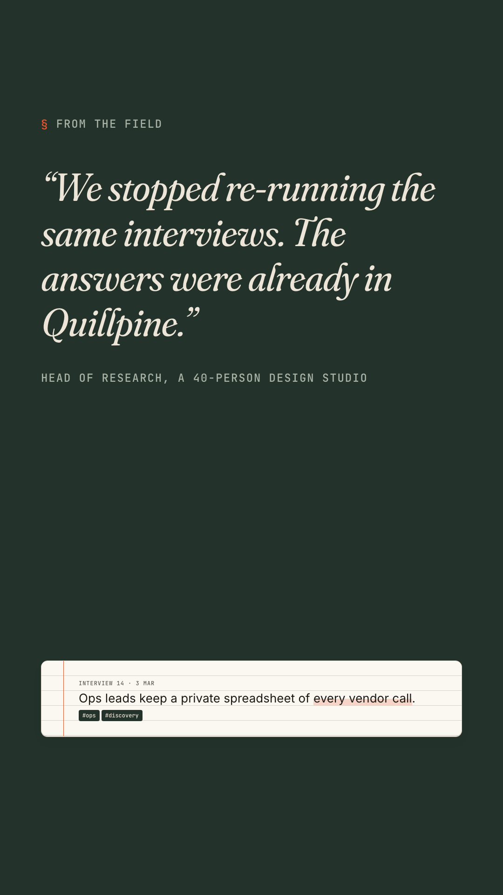
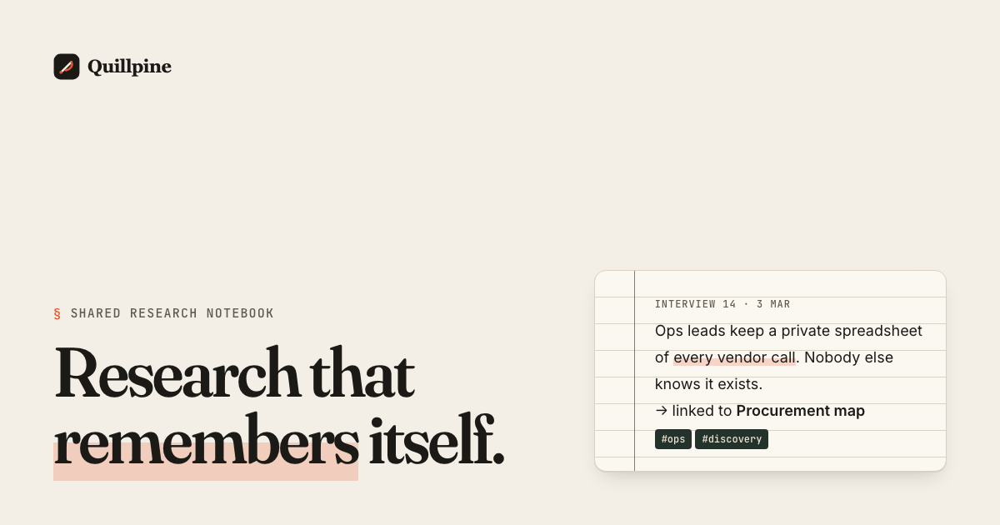
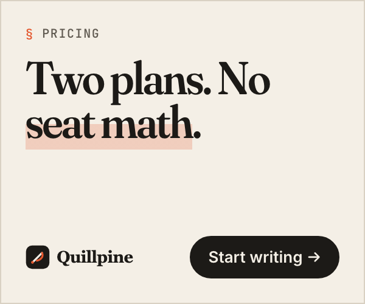

An agent skill that reverse-engineers the existing visual identity of a website or app into an evidence-based brand system: design tokens, guidelines, voice, template specs, and a generated skill that keeps future agents on-brand. It documents; it never redesigns.
npx skills add rufatalv/easy-brand
Quillpine is a fictional product made up for this demo. The skill was run on its marketing site, and everything below the source site was generated from the extracted tokens.





Every token cites the source line it came from. Every rule is labeled Observed, Inferred or Recommended.